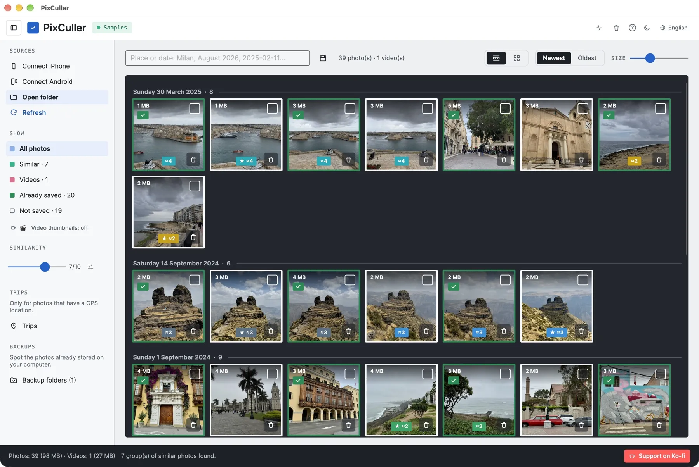
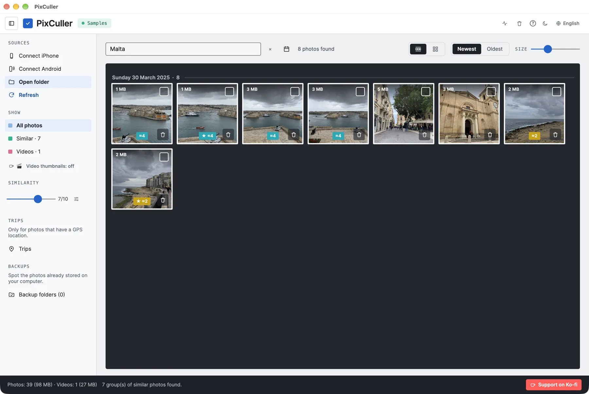

Sort your iPhone from your Mac or PC.
Plug in the cable. PixCuller finds duplicates and bursts, shows similar photos side by side, and lets you delete hundreds of photos in a few clicks. Works with Android too.
Free · No account · Your photos never leave your computer

How it works
Plug in
Connect your iPhone or Android phone with a USB cable. Nothing to install on the phone, no cloud, no account.
Compare
Similar photos, duplicates and bursts are spotted for you. Show up to six side by side and keep the best one.
Delete
Mark what you no longer want and delete hundreds at once, directly on the phone.
A look at the app




Why PixCuller
A mistake can be undone
By default, every deleted photo is kept for 30 days in a folder on your computer, so you can import it back.
Nothing leaves your computer
No photo and no GPS location is sent anywhere. No account, no cloud.
Built for speed
Tick, drag, Ctrl/⌘-click: select hundreds of photos in a few gestures.
Already saved? You will see it
Add your backup folders: photos that already have an identical copy on your computer get a green frame, so you know what can safely go.
Search by place or date
“Milan”, “August 2026”, “11.02.2025”: type it and find the photos, offline, from their GPS. A calendar button filters by period.
Day by day
The grid shows a line and a date for each day, or goes dense with the date on hover and along the scroll bar.
Free, really
No subscription, no in-app purchase, no account.
PixCuller
$0
Browse, compare, sort and delete, on an iPhone, an Android phone or a folder. Mac and Windows.
PixCuller works on its own: there is no other app to buy or install.
Delete from your computer
iPhone: a USB cable is enough. Photos are deleted directly on the iPhone, without going to “Recently Deleted”. You need a Windows 10/11 PC or a Mac on macOS 27 or later, with iCloud Photos turned off on the iPhone.
Android: same principle, with nothing to install on the phone. Windows 10/11 PC or a Mac on macOS 27 or later.
Safety net: by default, PixCuller keeps a copy of every deleted photo for 30 days in “PixCuller Trash” (Pictures folder). In a folder on your computer, files go to the Trash or Recycle Bin.
Also: your photos grouped by trip, with the space each one takes.
Guides to sort your photos on a computer
How to sort your iPhone photos on a Mac
Sort thousands of iPhone photos on your Mac: what Photos and Image Capture can and can't do, and a faster way to group, compare and delete.
How to sort your iPhone photos on a Windows PC
Sort thousands of iPhone photos on Windows 10 or 11: what the Photos app and File Explorer show, and a faster way to group, compare and delete.
How to sort thousands of photos faster on a Mac or PC
Why sorting photos on a big screen is so much faster than on a phone, and a simple method to go through thousands of photos in one sitting.
How to free up your iPhone from a Mac or Windows PC
Plug in your iPhone, sort photos on a big screen and delete what you don't need, without iCloud and without sending anything online.
How to compare similar photos and keep the best one
A simple routine to choose the best shot among near-identical photos: what to look at, and how to do it quickly on a big screen.
How to find duplicate and similar photos on a Mac
Find exact copies, bursts and near-identical shots in your Mac's photo folders or on an external drive, keep the best and send the rest to the Trash.
How to find duplicate and similar photos on Windows 10 or 11
Find exact copies, bursts and near-identical shots in your PC's photo folders or on an external drive, keep the best and send the rest to the Recycle Bin.
How to sort a big folder of photos, or a whole external drive
Old backups, camera cards, an external drive full of photos: a simple method to sort thousands of files by trip, remove near-duplicates and keep the best.
How to sort your Android photos on a Mac
A Mac has long struggled to read Android phones over USB. How to sort thousands of Android photos on a Mac with macOS 27 and delete what you don't need.
How to sort your Android photos on a Windows PC
Sort thousands of Android photos on Windows 10 or 11: what File Explorer and the Photos app show, and a faster way to group, compare and delete.
How to free up your Android phone's storage from a Mac or PC
Connect your Android phone by USB, sort photos on a big screen and delete what you don't need, without paying for Google One and without uploading anything.